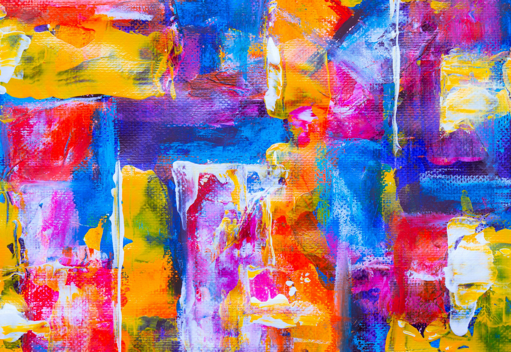
Color and Emotion
Discover how colors and shapes communicate feelings.
Discover creative work in different styles, places, and communities. From paintings to architecture, art can be found all around us.
Explore color, texture, imagination, and personal expression.

Discover how colors and shapes communicate feelings.
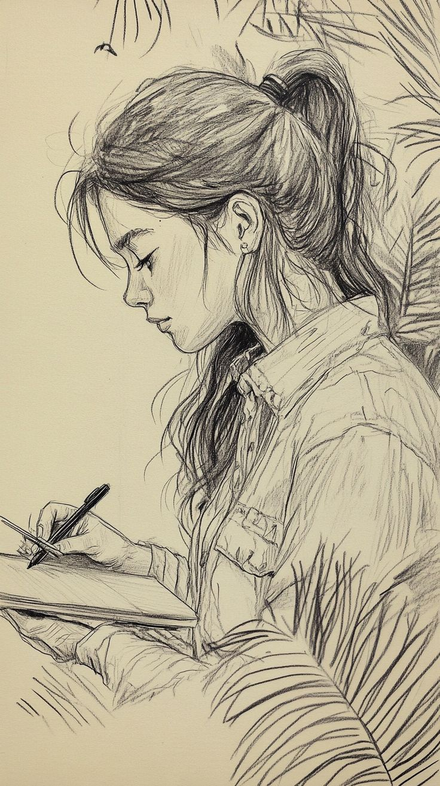
Appreciate the lines, details, and ideas behind a drawing.
Find inspiration in landscapes and the natural world.
See familiar places and everyday moments from new perspectives.
Discover the beauty of plants, wildlife, and landscapes.
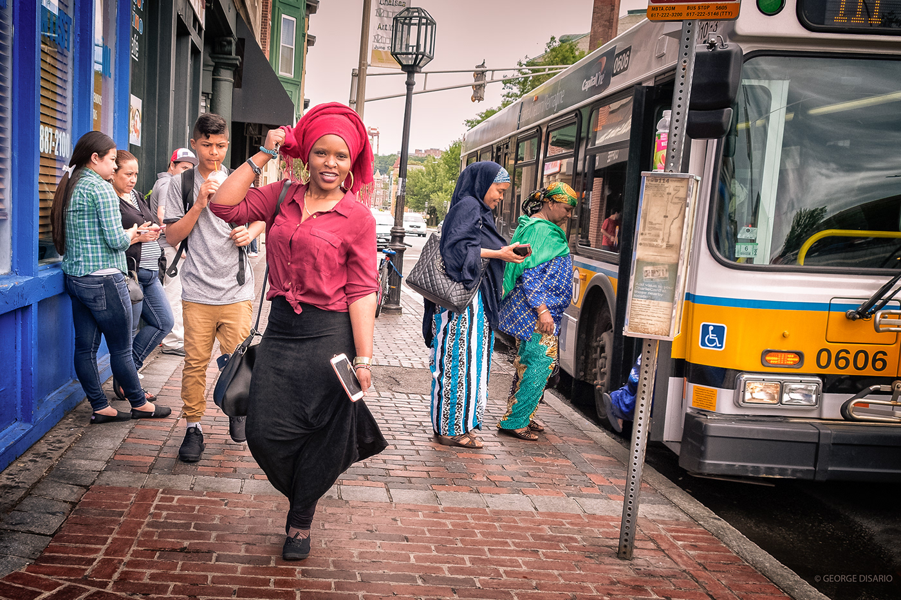
Notice the stories and details in ordinary surroundings.
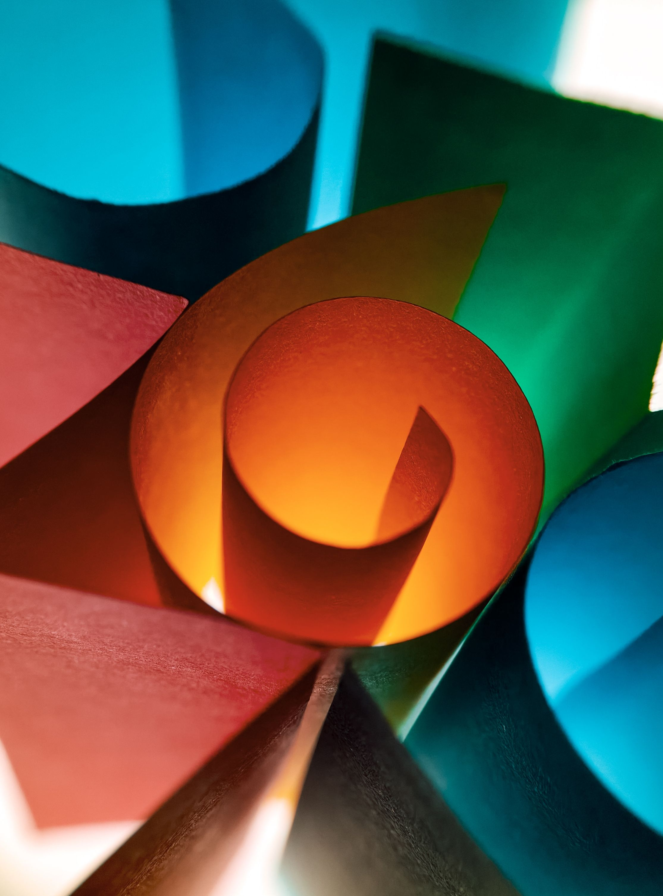
Explore creative ways of seeing the world.
Discover art created through shape, material, and three-dimensional form.
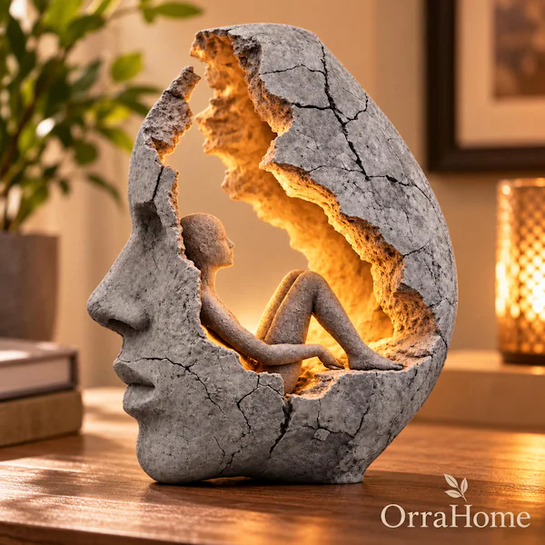
Explore shapes and forms that challenge expectations.
Appreciate the craftsmanship of handmade objects.
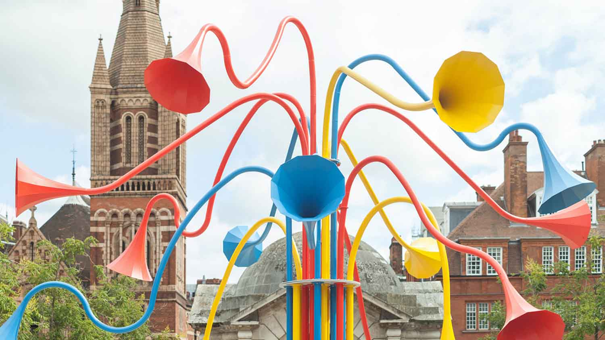
Find sculptures that bring creativity into shared places.
Explore the artistic side of buildings, structures, and designed spaces.
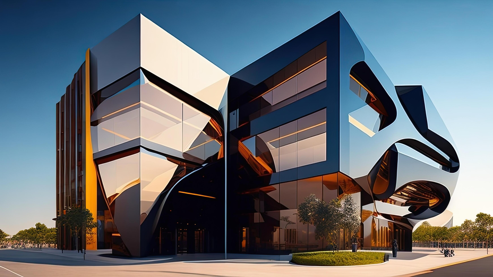
Discover how shapes and materials define a building.
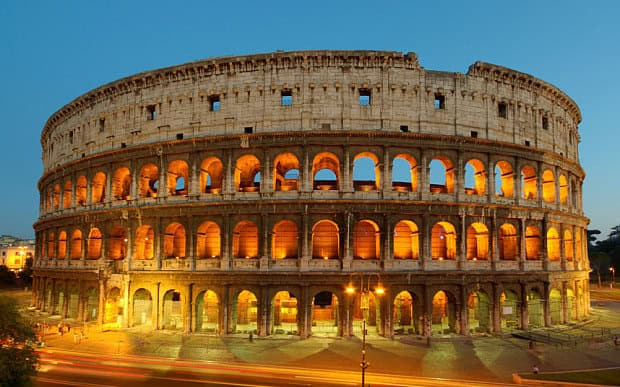
See how architecture reflects history and culture.
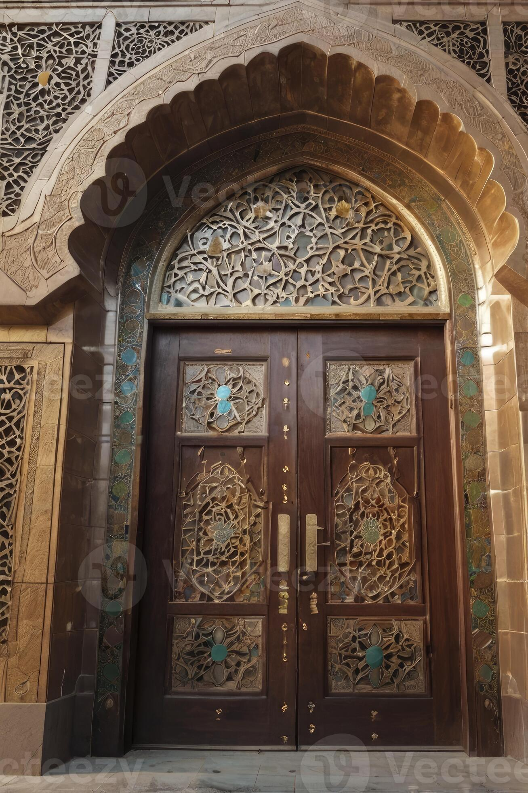
Notice the patterns and craftsmanship in everyday spaces.
Discover creative work made with digital tools and technology.
Explore imaginative artwork created on digital canvases.
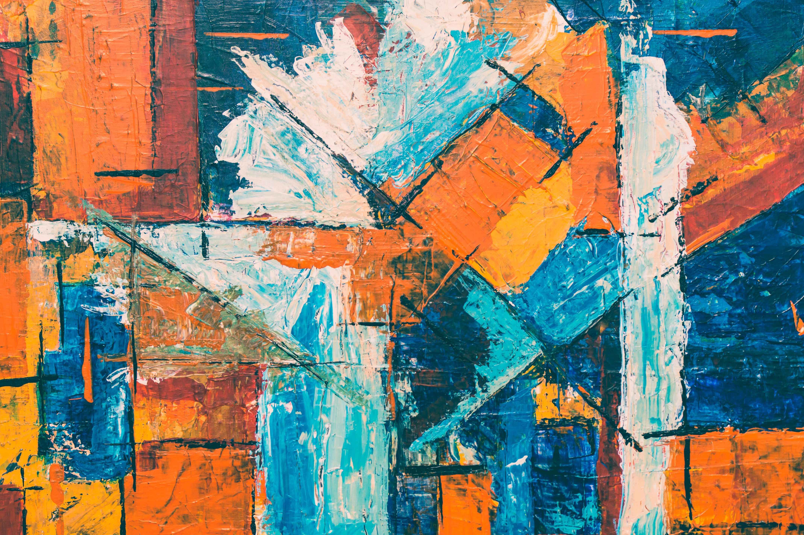
See how color, patterns, and technology combine.
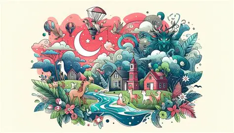
Discover new ways to communicate ideas visually.
Art can take many forms, including textiles, mixed media, and handmade crafts.
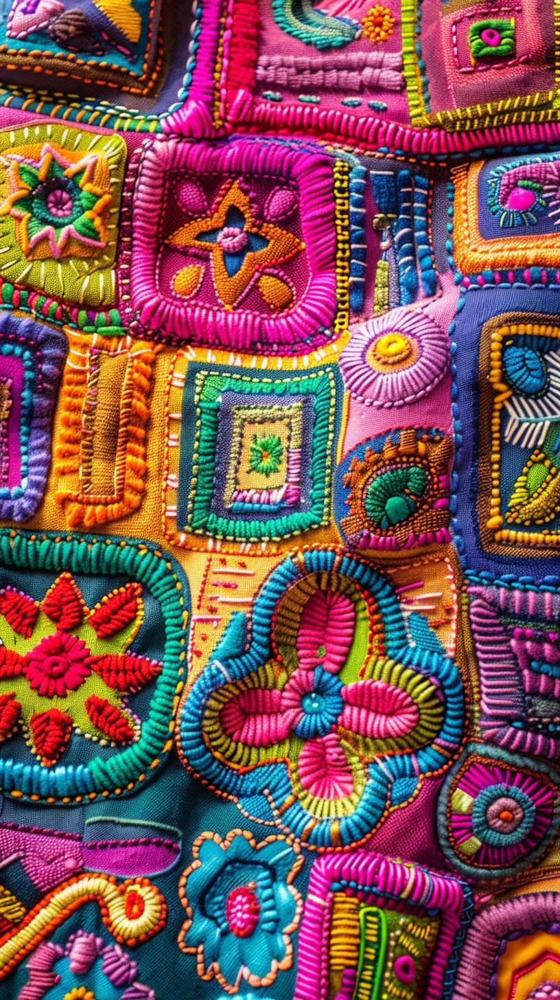
Explore art made with fabric, thread, and patterns.
Discover work that combines different materials and methods.
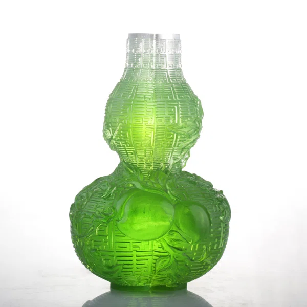
Celebrate creativity in objects made by hand.
Have art you'd like to share? Submit your artwork or tell us about art you've discovered.